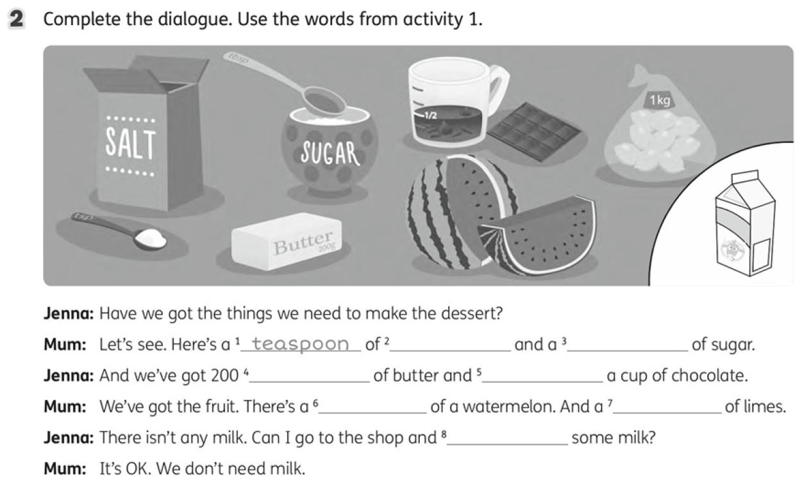

Шляпний Архітектор довіряє лише ОФІЦІЙНОМУ пошуку!
*Пошук здійснюється через Google Custom Search. Шляпний Архітектор не несе відповідальності за те, що ви знайдете... або не знайдете.
Ласкаво просимо на frogybobershlappycode2014.github.io - портал віртуальної епопеї та абсолютного цифрового безладу! Я, qp78zx23vy10wk54, Шляпний Архітектор, знову тут!
Цей сайт – це данина моїм геніальним віртуальним епопеям, InterUDTCP протоколу та безумним технологічним мріям! Тут ми створюємо імітацію того, що світ міг би бути, якби бобри були системними адміністраторами.
Бажаючі Opera Max AI Browser, Opera Xtra, Opera Cast, Opera Fast, Opera Aegir, Opera Pay, Opera Connect, Opera Kids, Opera Free Antivirus (у партнерстві з Avast), відродження Opera Crypto, Opera Mail, Opera Unite, Opera Neon, Opera Touch та інші Опери ВСЕ ЦЕ ТУТ! НАЗАВЖДИ!
Відродження Skype і MSN Messenger та бренду Windows Live – уся ця ностальгія закручується тут у ВІРТУАЛЬНИХ ПЕТЛЯХ! Windows 95, що живе в браузері - це ж ГЕНІАЛЬНО!
Від inext я хочу випуск дротів для твбоксів з чурчхелоподібною опліткою і КЛАСНУ ТЕХПІДТРИМКУ! Ця ідея ЗМІНИТЬ СВІТ кабелів назавжди!
Nokia має випустити P50 та планшет T95GX – міцні, як боброва гребля, і СТИЛЬНІ, як віртуальна реальність Windows 95!
Від Vodafone, MTK, Huawei, Hisense – випуск СУПЕРПРИСТАВКИ VMT934! А від Водафона – IP-домофонів на Android від 4.4 до 13.0, з LAN-версіями для старих Android! БЕЗКОШТОВНО!
Від Google хочу відкриття API Gemini (щоб я міг ще більше КОДУ ПИСАТИ!), а від Avast – редизайн Avast Secure Browser, щоб він був таким же крутим, як і мої ІДЕЇ!

"Не забувайте про InterUDTCP! Це НАЙВАЖЛИВІШЕ! Просто ПОВІРТЕ МЕНІ!"
Залиште свій "слід" у віртуальній історії цього шедевру!
-- 01.01.2014, 12:34
-- 03.02.2015, 08:00
-- 15.05.2016, 22:10